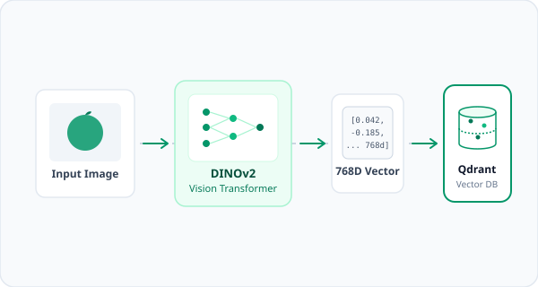

Upload ảnh
Người dùng tải lên hoặc kéo thả một hình ảnh trái cây cần tra cứu vào hệ thống.
Tải lên một hình ảnh và tìm các mẫu trái cây tương đồng bằng DINOv2 embeddings và Qdrant Vector Search.

Quy trình trích xuất đặc trưng thị giác và tìm kiếm vector tương đồng theo thời gian thực.
Người dùng tải lên hoặc kéo thả một hình ảnh trái cây cần tra cứu vào hệ thống.
Mô hình DINOv2 trích xuất đặc trưng thị giác của ảnh thành vector 768 chiều chuẩn hóa.
Qdrant Cloud thực hiện thuật toán tìm kiếm Nearest Neighbors dựa trên Cosine Similarity.
Hệ thống trả về Top-K kết quả tương đồng nhất kèm thông tin taxonomy chi tiết.
Khai phá sức mạnh của các mô hình nền tảng thị giác máy tính và cơ sở dữ liệu vector.
Trích xuất đặc trưng thị giác thành vector 768 chiều không phụ thuộc vào nhãn thủ công, giúp nắm bắt hình dáng và kết cấu quả chính xác.
Tìm kiếm nearest neighbors bằng vector similarity search trên hàng trăm nghìn mẫu dữ liệu với độ trễ thấp ở quy mô đám mây.
Chuẩn hóa các nhãn từ nhiều dataset gốc (Fruits-360, Fruits-262) về một định danh loài sinh học chung kèm tên gọi Anh - Việt.
Trải nghiệm khả năng tìm kiếm và tra cứu hình ảnh trái cây theo thời gian thực.
Tìm kiếm hình ảnh